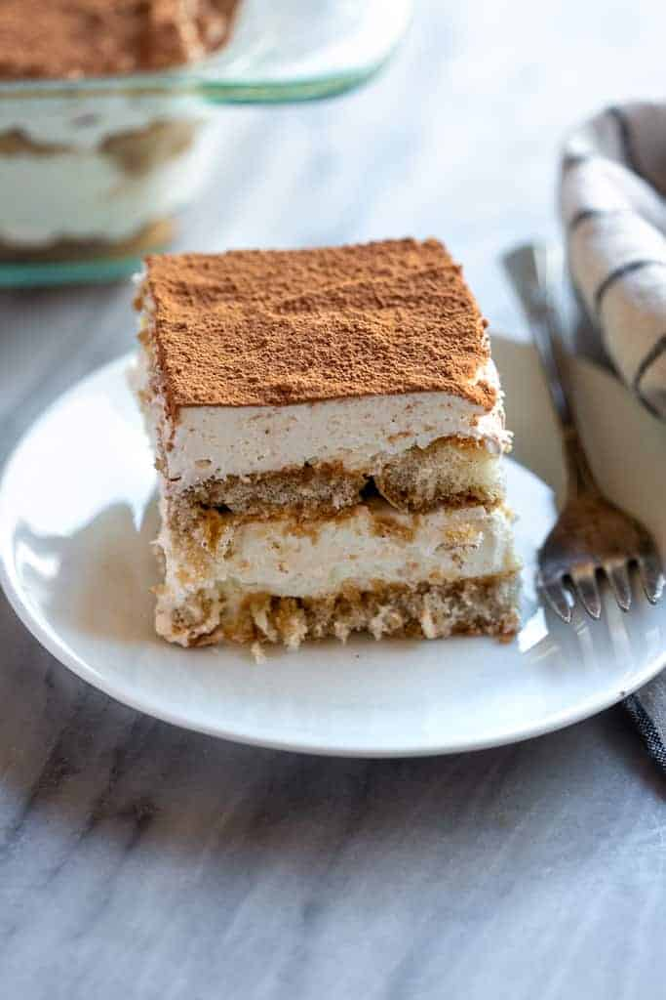

Tiramisu
Tiramisu

Tiramisu
A delicious and ridiculously easy no bake recipie for an Italian favourite.
Ingredients
- Ladyfingers
- Mascarpone
- Coffee
- Heavy whipped cream
- Granulated sugar
- Vanilla extract
- Cocoa powder
Steps
- Mix filling. Beat the mascarpone, cream, sugar, and vanilla together to form stiff peaks.
- Dip ladyfingers. Add coffee to a bowl and dip the ladyfingers on both sides quickly.
- Layer mascarpone. Smooth a layer of the mascarpone mixture on top of the lady fingers.
- Repeat. Add another layer of ladyfingers and another layer of mascarpone mixture.
- Finish and serve. Dust with the cocoa powder and serve.